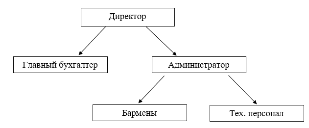
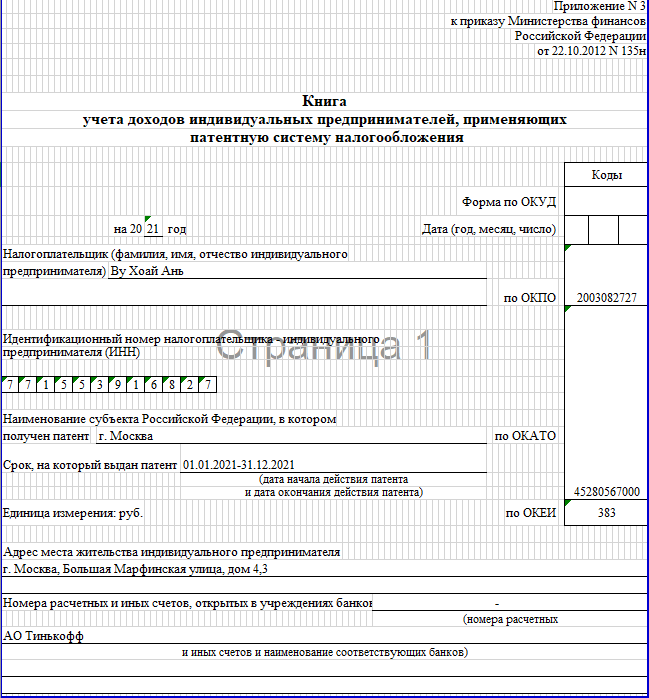
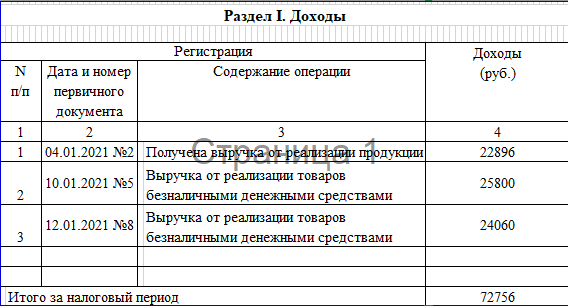

Глава 1 Характеристика ИП Ву Хоай Ань (Zintea) 3
1.1 Особенности деятельности ИП Ву Хоай Ань (Zintea) 3
1.2 Организационная структура ИП Ву Хоай Ань 6
1.3 Анализ финансового состояния компании 9
Глава 2. Порядок организации учета в исследуемой организации 12
2.1 Учетная политика и организация учета организации 12
2.3 Анализ конкурентов Zintea 17
Глава 3 SWOT-анализ Zintea. Рекомендации по совершенствованию деятельности заведения. 20
3.2 Разработка предложений по совершенствованию деятельности Zintea 23
Список использованных источников 28
Приложение 1. Титульный лист Книги учета доходов 31
Приложение 2 Таблица со сведениями о доходах 32
Приложение 3 Бухгалтерская справка 33
Целью данной практики являются закрепление и углубление теоретической подготовки, умений и навыков поиска, отбора и интерпретации информации с целью ее использования в практической деятельности, а также опыта самостоятельной профессиональной деятельности.
Объект исследования - ИП Ву Хоай Ань.
Предметом являются показатели финансового состояния.
Место происхождение практики - ИП Ву Хоай Ань. Продолжительность практики составляет 2 недели.
Для достижения цели были поставлены задачи:
Ознакомление с деятельностью организации, также изучить структуру и систему управления ИП Ву Хоай Ань;
Дать краткую характеристику организации, описать организационную структуру организации;
Также изучение работы, функций и должностных обязанностей персонала;
Изучить базу документов, регулирующую деятельность организации;
формирование и развитие первичных профессиональных умений и навыков сбора и анализа данных, полученных в процессе работы на предприятии. На основе этих данных сделать расчет экономических показателей, чтобы потом сделать вывод о финансовом состоянии компании;
Участие в процессе деятельности организации, чтобы выявить проблемы и найти пути их решения;
Формирование умений и навыков решения аналитических и исследовательских использованием современных информационных технологий;
Формирование умений и навыков применения научного подхода к решению поставленных задач.
Методы исследования при написании отчета: методы системного и статистического анализа, синтеза полученных результатов.
Информационной базой могут послужить материалы или знания, полученные в ходе работы в организации.
ИП Ву Хоай Ань зарегистрирован 25.12.2020. Юридический адрес компании: Москва, Большая Марфинская ул. 4,3. Фактически кофейня находится по адресу: Стремянный переулок 38.
Кафе не имеет собственного помещения и находится в фудкорте «Академия Еды» с общим количеством мест – 50. Объем дневной выручки составляет 20–40 тыс. рублей. За день организация реализует до 150 заказов. Режим работы кофейни с 10 до 22 часов.
Интерьер кофейни создан в приглушенных тонах. Удобные мягкие подушки над сиденьем, темно-коричневые деревянные столики расположены возле больших окон, которые пропускают много света, неяркое освещение в зале, все это создает приятную домашнюю обстановку.
Сфера осуществления деятельности ИП относят к оказанию услуг общественного питания. Основная деятельность организации – производство и продажа молочных коктейлей, чая и кулинарных изделий.
Цель создания и осуществления деятельности компании является расширение рынка своей сферы, также извлечение прибыли. Также компания не собирается заниматься реализацией напитков в одиночку, поскольку она намеревается иметь дело с различными продуктами, которые связанные с напитком. На данный момент компания занимается развитием и поддержанием бренда на рынке. Также компания активно занимается маркетингом путем спонсирования разных проектов.
Некоторые продукты и услуги:
- Различные вкусы (фруктовый чай, чай с молоком) и другие (например, смешанные, взбитые, на основе чая, смузи, слякоть)
- Тапиоки
- Порошок для приготовления напитка
- Сиропы
- Желе и соки из шариков
- Рецепты
Для увеличения количества потребителей компания сотрудничает с разными организациями (например, Гао – известный вьетнамский ресторан).
Хотя компания недавно была основана, но уже набирает популярность среди любителей обыкновенных напитков. Продукция компании называется баббл ти (Bubble tea) – это натуральный напиток на основе чая с добавлением молока, фруктовых сиропов. Также посетители могут выбрать в качестве топпинга тапиоки или фрукты в желе. Тапиоки – это жевательные шарики, состоящие из крахмальной муки растения маниок. Они является распространённым топпингом для молочного напитка баббли ти, популярность которого растет по всему миру. Напиток можно как в холодном, так и в теплом виде, что делает их популярными в любой сезон. Наша компания предлагает огромный выбор напитков, что дает возможность поэкспериментировать новый вкус напитка путем добавления в коктейль новый топпинг и тем самым получить новый вкус.
Страна происхождения напитка – Тайвань. Он был придуман в конце 80-х года, в России он появился только в 2012 году. По данным, собранным Fourspuare, популярность этого напитка выросла значительно в 2015 году. Все больше людей стали посещать кофейни, где делают и продают этот напиток.
Однако, несмотря на этот позитив, данный напиток не достиг масштабов как у некоторых гигантских кофейных магазинов, например, Starbucks или Dunkin`Donuts. В России есть многие чайные магазины, однако там отсутствует баббл ти, и они отстают от кофеен. В современном мире многие кофейни не имеют бренда, что мешает бабл ти завоевать позиции на рынке.
Статистика показывает, что большая часть население употребляют больше кофе, чем чай. Этот факт ставит наш напиток на неопределенный уровень, так как очень сложно нарушить привычки населения.
На данный момент компания работает над расширением бизнеса, открытием новых кофеен и франшизой. Чайные станции Zintea – это небольшие уютные кафе, в которых можно расслабиться на удобных диванчиках, почитать книжку и отведать Bubble Tea.
Для того, чтобы рассмотреть как осуществляется деятельность ИП Ву Хоай Ань, нужно знать организационную структуру компании. Организационная структура будет представлена на рисунке 1.
Рис. 1 Организационная структура ИП Ву Хоай Ань
Организация имеет линейную организационную структуру. Это простая иерархическая структура управления, которая состоит из руководителя и нескольких подчиненных работников. При данной организационной структуре директор наделяет всеми полномочиями, но у него остается единоличное руководство над всеми работниками.
Можно перечислить некоторые преимущества данной структуры:
Единство распорядительства
Простота управления и контроля
Быстрая реакция на прямые указания
Четкая система взаимосвязей между руководителем и подчиненным
При этом у линейной структуры управления существуют недостатки, такие как:
Перегрузка руководителя, большой поток информации и бумаг
Высокие требования к руководителю (у главы компании должны иметься обширные разносторонние знания и опыт по всем функциям управления и сферам деятельности.
Дальше мы будем рассматривать обязанности каждого члена компании.
В главе компании находится директор, которые обычно занимается кадрами, поставкой оборудования и ингредиентов.
Вместе с главным бухгалтером он ведет всю финансовую деятельность: бухучет, распределение прибыли и тд.
Обязанность администратора заключается в координации работы непосредственно в кофейне, маркетинге.
Технический персонал занимается обучением барменов, также бесперебойной работой оборудований в кофейне.
Компания очень тщательно относится к подбору бармена. К данной профессии очень высокие требования, это не просто специалист по приготовлению напитков, но и знаток многих нюансов этого искусства и еще он должен хорошо разбираться в сортах чая, знающий обычаи и традиции изготовления чая в разных странах.
Права и обязанности администрации компании определяются правилами внутреннего порядка.
Ответственность за управления всей торгово-производственной деятельности компании лежит на директоре.
Глава компании на свое усмотрение распоряжает материально-денежными средствами, приобретает имущество. Также на него возложена ответственность за контроль культуры обслуживание, качества продукции и соблюдение трудового законодательства.
Главный бухгалтер ведет учет доходов, производит все необходимые расчеты, также финансовую отчетность, а директор контролирует весь процесс.
Администратора отвечает за работу тех. персонала и бармена. Он должен контролировать соблюдения правил обслуживания посетителей, внутреннего распорядка и т.д. в соответствии с указаниями директора.
В течение рабочего дня администратор должен находиться в зале. В начале дня проверяется чистоту, порядка места работы и оборудования.
Ответственность организации работы барменов и тех. персонала возложена на администратора. Он составляет график работы персоналов. При нарушении графика, правил обслуживания администратор сообщает об этом руководителю. Дальше руководитель решает возложить штраф или просто предупреждение, при повторном нарушении - увольнение. При неправильной подачей готовой продукции, или в случае если посетителю не понравилась заказанная продукция, заменить продукцию.
По окончании дня администратор обязан следить за уборкой места работой, сдачей выручки в кассу и закрытием кассы.
Для всех работников кофейни установлены правила работы, должностные инструкции и инструкции по охране труда.
Все сотрудники кафе имеют медицинские книжки. Периодически проходят медицинский осмотр в строгом соответствии с нормативными документами.
Для барменов предназначена форма, сшитая на заказ. После каждого рабочего дня форма сдается в прачечную.
В связи с этим бармены отвечает за сохранность материальных ценностей. Это означает, что при недостаче продуктов по результатам ревизии все вычитается из ЗП. То же самое при поломке оборудований при вине работников.
В организации работают 4 барменов (делящиеся на 2 смены), 2 тех. персонала, 1 администратор, 1 бухгалтер.
Имидж и качество обслуживания заведения зависят много от правильного подбора персонала. Главная проблема заключаются в том, что многие относится в данной профессии, как к временной, учитывая специфику данной сферы деятельности, администратор и бармены легко переходят из одного заведения в другое, где больше предлагают заработную плату.
Для того, чтобы узнать как осуществляется деятельность ИП Ву Хоай Ань нам нужно рассмотреть основные экономические показатели работы предприятия. Как так ИП зарегистрировался только в конце 2020 имеются только данные за 2021. По полученным данным будем провести анализ по кварталам 2021 года. Результаты анализа представлены в таблице 1.
Таблица 1 Экономические показатели ИП Ву Хоай Ань
тыс. рублей
№ |
Показатели |
1 квартал |
2 квартал |
3 квартал |
4 квартал |
Изменение начала и конца 2021 года |
1 |
Выручка |
1633 |
2268 |
2267 |
2513 |
880 (+54%) |
2 |
Себестоимость продукци |
996 |
1119 |
1235 |
1803 |
807 (+81%) |
3 |
Прибыль от продаж |
637 |
1149 |
1032 |
710 |
73 (+11%) |
4 |
Годовой фонд оплаты труда |
1920 |
- |
|||
5 |
Численность работников |
8 |
8 |
8 |
8 |
- |
6 |
Среднежемесячная ЗП |
20 |
20 |
20 |
20 |
- |
7 |
Среднегодовая стоимость ОС |
182,5 |
177,5 |
185 |
190 |
7,5 (4,1%) |
8 |
Фондоотдача (Выручка/стоимосит ОС) |
8,95 |
12,8 |
12,3 |
13,2 |
4,25 (47%) |
9 |
Рентабельность от продаж (прибыль/выручка) |
39 |
50,6 |
45,5 |
28,3 |
-10,7 (-27,4%) |
Данные таблицы 3 показывают на рост выручки от реализации продукции. Указанный показатель увеличилась на 880 тыс. рублей, что составляет 54%, по сравнению с началом периода исследования. Причиной роста может служить увеличение посетителей кафе.
Негативным моментом для предприятия является рост себестоимости продукции. Рост себестоимости продукции почти опережает роста выручки. Данный показатель увеличился на 807 тыс. рублей, что составляет 81%, по сравнению с началом 2021 года.
Темп роста прибыли от продаж (11%) был меньше темпа роста выручки (54%) за исследуемый период, что указывает на недостаточное снижение издержек обращения. Прибыль от продаж увеличилась на 11%, что составляет 73 тыс. рублей по сравнению с первым кварталом. Это объясняется ростом выручки.
Годовой фонд оплаты труда работников в 2021 составил 1920 тыс. рублей. С данным показателем не произошли изменения. То же самое с среднемесячной заработной платой и численностью работников.
Увеличение стоимости основных средств говорит нам о обновляемости основных средств. Показатель увеличился на 4,1% по сравнению с началом периода исследование. Показатель “фондоотдача” показывает как эффективно компания использует основные средства, а он у компании вырос на 47% в конце года, что расценивается как положительная тенденция. Это произошло за счет роста выручка.
Рентабельность продаж показывает эффективность работы предприятия. За проанализированный период наблюдаем уменьшение данного показателя на 27,4%. Уменьшение рентабельности продаж произошло из-за увеличения себестоимости продукции.
В целом, на основе полученных результатов можем сделать вывод о достаточно стабильном развитии предприятия. Для более эффективной работы и увеличения прибыли компании необходимо решить проблему с увеличением себестоимости продукции.
ИП Ву Хоай Ань (Zintea) самостоятельно распоряжается прибылью, которую он получается в процессе осуществления деятельности после всех платежей налога и налоговых обязанностей. Учетная политика ИП Ву Хоай Ань сформируется в соответствии с ПБУ 1/2008 «Учетная политика организации». Указанная политика является основным документом, на основе которого ведется бухучет организации.
С 2021 года ИП Ву Хоай Ань применяет патентную систему налогообложения с соответствии с гл.26.5 НК РФ. Налоговая база при применении ПСН определяется как размер потенциального дохода, которые возможно получить в процессе осуществления деятельности за отчетный период (в соответствии с п.1 ст. 346.48 НК РФ). Так как сфера деятельности организации относится к оказанию услуг общественного питания, налоговая база организации в 2021 году 4 млн рублей, потому что кофейня не имеет собственного помещения. Ставка при ПСН составляет 6%. На таблице 1 будет показан расчет налога за 2021 год.
ИП Ву Хоай Ань ведет бухучет и статистический учет в соответствии с законодательством и несет ответственность за его достоверность. В организации установлена программа автоматизации «1С-Бухгалтерия».
Патентная система налогообложения является одним из специальных налоговых режимов. С 2021 года ПСН заменила ЕНВД полностью. Указанная система налогообложения создана для поддержания и устойчивого развития субъектов малого предпринимательства.
Список видов деятельности, при которой можно применить ПСН, указанный в ст. 346.43 НК РФ. Однако данный список является только рекомендованным, что означает каждый регион принимает соответствующий закон, в котором утверждает виды деятельности на патенте, разрешенные на его территории.
ПСН освобождает ИП от уплаты налогов на прибыль и на имущества, также НДС, за исключением случаев, где налог нужно платить в соответствии со статьей 151 НК РФ при ввозе товаров на территории России. Когда организация применяет ПСН, она уплачивает единый налог в бюджет.
За период использования ПСН организация должна вести книгу учета доходов, при ее отсутствии будет разыскать штраф в размере 10000 рублей.
По требованию ст. 346.53 НК РФ она нужна для доказательства налоговому органу, что компания соблюдает ограничение по размеру доходов – 60 млн рублей в 2021 году. При превышении лимита юридические лица теряют право на применения ПСН с самого начала его действия. После потери право применить патент предпринимателей переведут на УСН, если ими ранее было подано уведомление о переходе на УСН, если нет – ОСН.
Сейчас рассмотрим расчет патента на примере предприятии, где я прохожу практику. Результаты за 2021 год будут представлены в таблице 2.
Таблица 2 Расчет стоимости патента
Показатели |
Код строки |
Значение показателей |
Налоговая база |
010 |
4000000 рублей |
Налоговый период |
020 |
365 |
Налоговая ставка |
030 |
6% |
Налог |
040 |
240000 |
Налог за период применения ПСН имеет фиксированный характер. Налоговая ставка ПСН – 6%. Для Крыма и Севастополя может быть установлена в размере 4%.
Налоговая база выступает потенциальным доходом за год, который устанавливает органы регионального уровня. В некоторых случаях при расчете налога при патенте могут быть учтены следующие условия: площадь арендуемого помещения, торгового зала или численность работников. Если одно из условий изменилось за налоговый период в большую сторону, то налог подлежит пересчету (приобретается новый патент согласно письму Минфина РФ ОТ 29.04.2013 №03-11-11/14921).
В нашем случае ИП Ву Хоай Ань занимается оказанием услуг общественного питания без собственного помещения на 12 месяцев. Потенциальный доход, установленный региональным органом, составляет 4 млн рублей. Если имеется собственное помещение, то потенциальный доход может составлять 8 млн рублей. Так как патент куплен на год, то мы просто возьмем налоговую базу и умножить на ставку: 4000000 * 6% = 240000 рублей.
ИП Ву Хоай Ань применяет патентную систему налогообложения, поэтому организация освобождена от бухучета и от многих обязанности, а обязанность налогового агента остается.
Вместо бухучета организация ведет Книгу учета доходов, которая предназначена для соблюдений ограничений по размеру доходов (60 млн рублей).
Подать Книгу отчета в налоговой орган не обязательно, однако могут запросить ее при проверке. При выявлении нарушения разыскивается штраф в размере 10000 рублей, а при повторном нарушении - 30000 рублей.
Книга учета доходов состоит из титульного листа и таблицы со сведениями о доходах
Заполнение титульного листа будет представлено на примере ИП Ву Хоай Ань в приложение 1.
В титульном листе ИП показывается свои данные (ФИО, ИНН, адрес), данные о патенте (срок действия, территория действия), расчет счет (номер счета и название банка), также присвоенные коды.
Пример заполнения таблицы со сведениями о доходах будет представлен в приложении 2.
Индивидуальный предприниматель заполняет таблицу непрерывно и в строго хронологическом порядке - от самого раннего к самому позднему. Записываются все доходы, которые предприниматель получает от вида деятельности по патенту, не записываются заем или возвращенный аванс покупателем, доходы, полученные от другой деятельности, которую компания ведет по другой налоговой системе.
Таблица состоит из 4 графов:
Порядковый номер строки
Дата и номер первичного документа, который подтверждает доход (чеки ККТ,БСО, отчеты о закрытии смены и т.д.)
Содержание операции (например, выручка от реализации продукции)
Сумма дохода по операции в рублях
Предприниматель фиксирует доходы в Книге учета доходов в день фактического получения. При получении предоплаты в книге отражается день фактического получения.
Компания ведет Книгу учета доходов через онлайн кассу на основе бухгалтерской справки за день исходя из данных отчет ОФД.
При оплате безналичными средствами, выдается кассовый чек и учитывается вся сумма дохода без уменьшения комиссии эквайринг. Например, доход от реализации продукции составляет 10000, а на счет компании поступает только 9800 (200 - комиссия банка), то в книге отражается вся сумма дохода - 10000.
При появлении ошибки в книге, если она в электронном виде, бухгалтер просто скорректирует ошибку. А если книга в распечатанном или бумажном виде, то нужно аккуратно зачеркнуть неверные данные и рядом написать верные, заверить справку подписью руководителя и печатью.
Вместе с исправлением требуется еще бухгалтерской справке, где объясняется причина корректировки и что было неправильно. Пример бухгалтерской справки будет представлена в приложении 3.
Главными конкурентами Zintea являются следующие кофейни: Дав Бабл Ти, Nova Bubble Tea, Dragon Mixology Bar, Pims.
Дав Бабл Ти располагается в центре города, данное заведение притягивает “сливки общества”. Характеризуется разнообразием чаев и коктейлей. Стоимость напитков заведения колебается в диапазоне 450-500 рублей, а стоимость десертов - 200-400 рублей.
Nova Bubble Tea имеет помещение с небольшой площадью, где можно собраться с друзьями, сидеть и отдохнуть. Также заведение имеет большой выбор вкусов и ингредиентов.
Dragon Mixology Bar появилось прям недавно, однако развивается очень быстро. Заведение с уютной атмосферой и милым интерьером. Меню разнообразно. С дня открытия данное заведение имеет уже 3-4 точки (за 1 год).
Pims является одним из лучших заведений в москве. Большой ассортимент чаев с добавлением сливок, фруктов и тапиоки, также имеются десерты. Несмотря на новый тренд, заведение очень быстро набирается свою популярность.
Все вышеперечисленные заведения являются основными конкурентами, они превосходят наше заведение как по размерам площади, так и по широте и разнообразию меню.
По результатам опроса, где участвовали 100 посетителей нашего заведения. Достаточно большая часть посетителей высоко оценивают услуги /*-заведения. 25 из 100 человек считают, что заведение не уступает ни одному из конкурентов, а 35 человек предпочитают Zintea другим заведениям. На основе полученных данных опроса я сделал анализ оценки заведений, которая представлена в таблице 3.
Таблица 3. Оценка Zintea и его конкурентов
Характеристика |
Важность для потребителя |
Оценка качества характеристик |
||||
Zintea |
Дав бабл ти |
Nova B.T |
Dragon M.B. |
Pims |
||
Интерьер |
5 |
4 |
3 |
5 |
5 |
5 |
Меню |
4 |
4 |
5 |
5 |
5 |
5 |
Качество блюд |
5 |
5 |
4 |
4 |
5 |
5 |
Компетентность персонала |
3 |
4 |
4 |
3 |
5 |
5 |
Цена |
5 |
4 |
3 |
3 |
4 |
4 |
|
22 |
4.2 |
3.8 |
4.0 |
4.8 |
4.8 |
Из оценок таблицы 3 можем сделать следующие выводы:
Слабыми сторонами Zintea являются меню и интерьер. Меню заведения не так разнообразно в других заведениях, также компания очень редко обновляет меню и почти не выпускает новые напитки, когда в то же время, другие заведения постоянно обновляет меню и выпускает новые напитки. Интерьер заведения нравится не всем посетителям, так как кофейня не имеет собственное помещение. Оно оказывает услуги в общем помещении с фудкортом. Цены в Zintea средние и выше среднего.
По итогам анализа легко увидеть, что заведение уступает по качеству характеристик Pims и Dragon Mixology Bar, которые отличаются своим интерьерами, площадями заведений, раскрученностью, широким выбром блюд и напитков.
Для того, чтобы разработать рекомендации по совершенствованию компании, проведем SWOT-анализ. Выявим угрозы для осуществления деятельности компании, также возможности, сильные и слабые стороны (см. табл. 4)
Таблица 4 SWOT-анализ Zintea
Возможности |
Угрозы |
|
|
Сильные стороны |
Слабые стороны |
|
|
По результатам анализа заведение обладает почти всеми необходимыми для осуществления деятельности. Однако нужно больше обратить внимание на повышение узнаваемости бренда, создать клиентскую базу, также уменьшить затраты на сырье.
Риск для сферы общественного питания бывают внешние и внутренние. К внешним относятся риски, которые не зависят от руководителя организации, а ими могут быть:
Изменение законодательства и повышение;
Повышение цен на ингредиенты;
Снижение покупательской способности потребителей и т.д.
А внутренние риски могут возникнуть при неправильной организации работы самого заведения.
Для деятельности компании существуют некоторые риски:
Рост конкуренции. В России бабл ти все еще набирает свою популярность, так как этот вид чай отличается своей необыкновенностью, разнообразием. Рост популярности привел к рост заведений с бабл ти.
Рост курса доллара. Компания покупает ингредиенты для реализации за границей (во Вьетнаме) и оплачивает за покупку и доставку по валюте (доллар). При росте курса валюты увеличиваются расходы на реализацию продукции, что уменьшает выручку организации.
Снижение числа квалифицированных кадров. Как я говорил раньше, многие считают работу в сфере общественного питания как временная. Если другое заведение предложит более высокую зарплату, то опытный сотрудник может спокойно покинуть наше заведение.
Инфляция, что приведет к индексации заработной платы сотрудников.
Потеря, порча имущества. Первое редко происходит. А порча может быть из-за вины сотрудников или оборудование быстро изнашивается.
Для повышения эффективности работы заведения и усовершенствовать его в следующем параграфе будем рассмотреть некоторые рекомендации.
Разработка предложений по совершенствованию деятельности в Zintea необходимо для ускорения и увеличения выручки компании для дальнейшего расширения на рынке.
Для этого нужно мероприятия, направленные на совершенствования управления. Такие мероприятием может быть внедрение системы менеджмента качества.
Внедрения СМК состоит из 5 этапов:
Организация работ по созданию СМК (создание организационных предпосылок для разработки и внедрения СМК)
Проектирование СМК. Создание организационной структуры СМК
Создание организационно-нормативной основы СМК
Внедрение СМК. Обеспечение функционирования СМК в соответствии с установленными требованиями
Подготовка к сертификации СМК.
Основные этапы внедрения СМК в Zintea будут представлены в таблице 5. Процесс внедрения СМК может занять около года.
Таблица 5 Основные этапы внедрения СМК в Zintea.
Этап |
Период |
Описание |
Подготовка к внедрению СМК |
декабрь 2021 |
Изучение основных положений стандарта СМК |
Разработка нормативной базы |
июнь 2022 |
Разработка руководства по качеству и безопасности в компании |
Внедрение СМК |
декабрь 2022 |
Внедрение СМК в работу |
Здесь основной задачей является снижение затрат на качество. Одна из главных затрат это затрата на исправление проблем, связанных с недостаточным качеством процессов.
В современных условиях экономики, которые постоянно меняются, предприятию нужно оперативно реагировать и быстро адаптировать. Для этого организация должна создать свой стиль работы, который наилучшим способом учитывает специфику условий, возможностей, целей и ресурсов.
Предлагаемые мероприятия по мотивации включают 4 основных направлений:
разработка методики внутреннего обучения персонала, с использованием дистанционного обучения;
Ведение концепции управления взаимоотношениями с клиентами;
Усовершенствование системы контроля за работой персонала;
Дополнительное стимулирование для сотрудников предприятия, выполняющие также роль привлечения новых, более профессиональных компетентных работников.
Также рассматриваются вопросы взаимодействия между руководителем и подчиненными, построение оптимальной системы контроля и т.д.
Также компании нужно решить проблему с расходами на реализацию продукции. Так как компания закупает все за границей, стоимость ингредиентов и поставки зависят все от курса доллара, нужно найти замену в Российской Федерации. Это может значительно уменьшить расходы на реализацию. Еще один риск, который может возникнуть при покупке за границей, это сбои поставки или слишком долго поставляют в Россию (причиной может быть таможня и т.д.). Это очень плохо для деятельности компании, так при сбое поставки организация не может осуществить деятельность, что приведет к потери преимущества перед конкурентами.
Для расширения компании еще нужно источник финансовых средств и бренд. Нехватка финансовых средств для дальнейшего развития - это одна из слабых сторон организации. Для того, чтобы решить данную проблему нужно привлечь инвестиции. А чтобы в нашу компанию инвестировали нам нужно создать четкий бизнес-план, также сделать бренд известным путем рекламирования в соц. сетях (где нужно предоставлять о том, чем наше заведение отличается от других).
Сувенирная продукция - фирменные стаканы, специальные бутылки для бабл ти и т.д. На каждом предмете должен быть размещен фирменный знак заведения. Совершенствование маркетинговой деятельности компании может повысить выручку продаж.
Таким образом, мы разработали некоторые рекомендации по повышению эффективности работы и совершенствованию деятельности Zintea.
В процессе прохождения практики была выполнена ее цель и решены поставленные задачи:
Рассмотрена характеристика компании и её основные виды деятельности;
Описана структура компании;
Изучена база документов, регулирующая деятельность организации;
Проанализировали финансовое состояние компании, узнали что компания довольно финансово устойчива.
Рассмотрели учетную политику компании и ведение учета (заполнял книгу учета доходов)
Рассмотрел конкурентоспособность компании, также проанализировали возможности, риски, также сильные и слабые стороны организации;
Разработали некоторые предложения по совершенствованию деятельности организации:
Внедрение СМК.
Здесь основной задачей является снижение затрат на качество. Одна из главных затрат это затрата на исправление проблем, связанных с недостаточным качеством процессов.
В современных условиях экономики, которые постоянно меняются, предприятию нужно оперативно реагировать и быстро адаптировать. Для этого организация должна создать свой стиль работы, который наилучшим способом учитывает специфику условий, возможностей, целей и ресурсов.
Рассмотрены вопросы по взаимодействию руководителя и подчиненных.
Были обсуждены вопросы по снижению расходов на реализацию. Можно найти поставщиков в России, что приведет к значительному уменьшению расходов. Также рассматривали расширение бизнес путем привлечения инвестиции.
Усов В.В. Организация производства и обслуживание на предприятиях, общественного питания./В.В.Усов. М.: Проф Обр. Издательство, 2017 г.
Александров, И.М. Налоги и налогообложение: учебное пособие / И.М. Александров. - М.: Издательский дом «Дашков и К», 2018.
Карасев М.Н. Налоговый механизм и правовое регулирование налогообложения в России. М.: ООО «Вершина», 2017.
Мамрукова О.И. Налоги и налогообложение. Курс лекций: Учеб. Пособие. Издание 3-е, доп. и испр. - М.: Омега - Л, 2017.
Баландина А.С. Патентная система налогообложения как поддержка малого бизнеса (на примере Томской области) // Современные проблемы науки и образования. - 2017.
Верецкий А.В. О совершенствовании налогообложения субъектов малого и среднего предпринимательства // Финансовая экономика. - 2018.
Данные по формам статистической налоговой отчётности // Официальный сайт ФНС России [Электронный ресурс]. – Режим доступа: https://www.nalog.ru/rn42/related_activities/statistics_and_analytics/forms/ (дата обращения: 23.04.2022).
Страховые взносы в 2016 году: изменения // Контур [Электронный ресурс]: Журнал. – Режим доступа: https://kontur.ru/articles/2937 (дата обращения: 20.04.2022).
Налоговый кодекс Российской Федерации. Часть вторая // Консультант Плюс [Электронный ресурс]. – Режим доступа: http://www.consultant.ru/document/cons_doc_LAW_28165/ (дата обращения: 22.04.2022).
Финансовый анализ : учебник и практикум для бакалавриата и магистратуры / И. Ю. Евстафьева [и др.] ; под общ. ред. И. Ю. Евстафьевой. — М. : Издательство Юрайт, 2018. — 337 с
Синицкая, Н. Я. Финансовый менеджмент : учебник и практикум для прикладного бакалавриата / Н. Я. Синицкая. — 2-е изд., испр. и доп. — М. : Издательство Юрайт, 2018. — 213 с.


о внесении исправлений в книге учета доходов